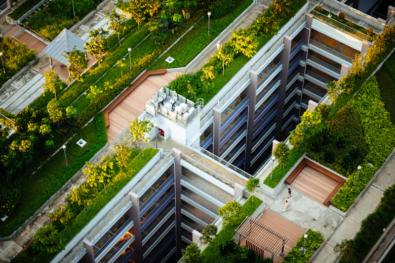
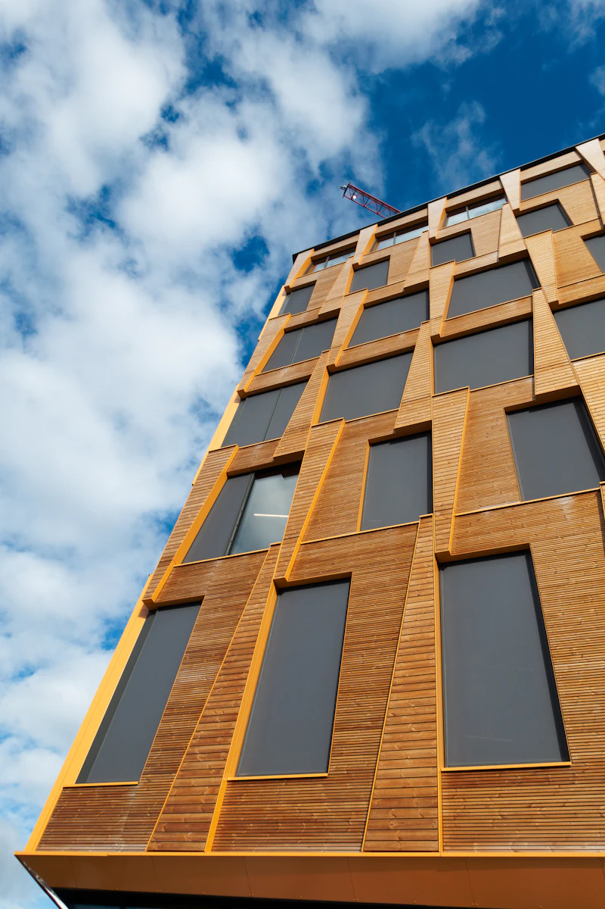
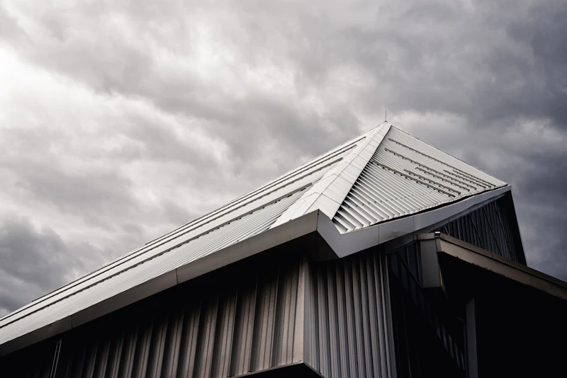

Steildach
Die Urform aller Dachkonstruktionen – heute vielseitiger denn je. Ob Holzschindel, Ziegel oder Naturstein: Wir finden für jeden Wunsch eine individuelle Lösung, von der Loggia bis zur Dachterrasse.

Dachdeckermeisterbetrieb · Hannover & Umgebung
Vom ersten Aufmaß bis zur letzten Schieferplatte: Wir decken, dichten und dämmen Ihr Dach – individuell, zuverlässig und fachgerecht. Am Neubau wie am Altbau.
[ unser anspruch ]
Ein Dach ist mehr als Schutz vor Wetter. Es ist Handwerk, das Jahrzehnte hält – geplant mit Präzision, gedeckt mit Leidenschaft und gebaut, als wäre es unser eigenes.
— Sven Gutjahr, Dachdeckermeister
[ unsere leistungen ]
Die Urform aller Dachkonstruktionen – heute vielseitiger denn je. Ob Holzschindel, Ziegel oder Naturstein: Wir finden für jeden Wunsch eine individuelle Lösung, von der Loggia bis zur Dachterrasse.
Dauerhaft dicht – auch beim Null-Grad-Dach. Mit dem richtigen Material und zuverlässigem Handwerk, auf Wunsch mit extensiver oder intensiver Dachbegrünung.

Vorgehängte, hinterlüftete Fassaden aus Schiefer, Holz, Faserzement oder Metall. Das Kondensat wird abtransportiert – Dämmung und Mauerwerk bleiben trocken.

Wärmedämmung, Dachfenster, Lüftung und Absturzsicherung: die Technik, die aus einem Dach ein energieeffizientes, sicheres Zuhause macht.

Kupfer, Titanzink, Aluminium: Seit Jahrhunderten formen Spengler aus Metall kleine Kunstwerke. Vom präzisen Rinnenanschluss bis zum eleganten Stehfalzdach.

Eine der schönsten Künste des Dachdeckerhandwerks – und unsere Spezialität. An Dach, Fassade und Einbauteilen sind dem Handwerkskünstler kaum Grenzen gesetzt.

[ energieberatung ]
Als zertifizierter Gebäudeenergieberater (HWK) zeigen wir Ihnen, wie Sie die Vorgaben des Gebäudeenergiegesetzes (GEG) einhalten – und welche Fördermittel von KfW und BAFA Sie mitnehmen können. Damit sich Ihr neues Dach doppelt rechnet.
Schritt 01
Ihres Daches und der vorhandenen Dämmung – vor Ort, ehrlich und ohne Verkaufsdruck.
Schritt 02
Welche gesetzlichen Anforderungen gelten für Ihr Vorhaben – und was folgt daraus konkret.
Schritt 03
KfW- und BAFA-Programme im Überblick: was passt, was bringt es, wie wird beantragt.
Schritt 04
Durch unseren eigenen Meisterbetrieb – aus einer Hand, ohne Schnittstellenverluste.
„Ein Schieferdach bedeutet Leidenschaft.“
[ Schieferdeckung — unsere Spezialität ]
[ über uns ]
Sven Gutjahr ist als Sohn eines Dachdeckermeisters aufgewachsen und „krabbelte“ schon frühzeitig aufs Dach. Heute stellt er Ihnen seine fachliche Kompetenz als selbstständiger Dachdeckermeister und Gebäudeenergieberater zur Verfügung – mit Schwerpunkt auf Schieferdeckung und Bauklempnerei.

[ karriere ]
Sie arbeiten gern mit den Händen und haben Höhenluft im Blut? Wir suchen Verstärkung – vom Gesellen bis zum erfahrenen Vorarbeiter.
[ kontakt ]
Vereinbaren Sie noch heute ein persönliches, unverbindliches Beratungsgespräch – wir melden uns schnellstmöglich zurück.
AnschriftGutjahr Dachtechnik · Sven Gutjahr
Lange Weihe 26 · 30880 Laatzen
Telefon+49 (0) 511 982 30 89 0
E-Mailinfo@gutjahr-dachtechnik.de
Antwort in der Regel innerhalb von 24 h